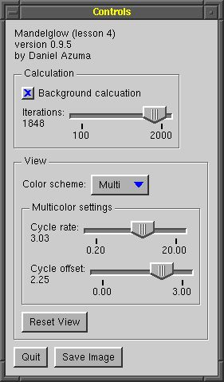

|
Contents |
Lesson 3 |
Lesson 5 |
| Introduction |
One of the most powerful features of GLOW is its widget library. This lesson will explore some of the basics of using GLOW's cross-platform widgets, by replacing the menus we implemented in lesson 3 with a control panel that we can use to control aspects of the Mandelbrot calculation and display. We'll also implement a few additional features, including the ability to change the iteration level, and more powerful control over the color scheme. At the end of this lesson, you should have an understanding of how to create more complex user interfaces using widgets.
| About GLOW widgets |
 Before we go on to the code, here's an overview of GLOW's widget system and how you interact with widgets.
GLOW widgets are objects that inherit from the base class GlowWidget. A widget is a controllable user interface object that takes up a specific area of the screen, responds to user input such as mouse clicks, and raises special events known as widget events. These include events such as button presses, slider drags, and popup menu selections. To add widgets to your user interface, you go through two steps. First, create the appropriate widget objects, configure them and lay them out in a window. Second, write classes to handle the widget events you are interested in receiving.
GLOW provides two APIs for the step of creating and laying out widgets. The first is a low-level API designed for flexibility. To create widgets using the low-level API, you fill out a parameter block and pass it to the widget's constructor. The parameter block interface gives you fine-level control over many aspects of each widget's appearance and behavior, as well as pixel-level control over its size and positioning. The parameter block API will be discussed in more detail in lesson 7. In addition, the program in lesson 0 uses the parameter block API to create the quit button.
The second API, called the QuickPalette API, is a high-level API designed for ease-of-use. The high-level API does not provide all of the flexibility of the low-level API, but it handles many of the details automatically and is usually adequate for most applications. It allows you to create widgets with a single line of code, and includes facilities for automatically sizing and arranging widgets. The example in this lesson uses the QuickPalette API.
GLOW also provides two ways your program can receive and respond to widget events. First, widgets report events by sending messages to receivers. You can bind a widget to a receiver object to receive notification of events. Alternatively, your program may subclass the widget class and override a virtual method for the event. In most cases, you will probably use the receiver method of handling events.
To use widgets, you need to #include the header file glowQuickPalette.h. This line is present in our mandelwind.h file. This header includes all the APIs necessary to use the high-level QuickPalette for creating widgets. If you are using the low-level API, you will #include a different set of headers. We will also see later that we need to add a few more GLOW modules to the Makefile.
Reference: class GlowWidget
| Creating widgets |
To see how to create widgets, let's take a look at the new constructor for MandelWind, in the file mandelwind.cpp. It's been greatly expanded. First off, we've commented out the code we added in lesson 3 that creates a menu to attach to the right mouse button; we're going to provide access to this functionality using widgets instead.
Creating a widget palette window
The next line creates an object of type GlowQuickPaletteWindow. This is a subclass of GlowWindow that is designed to arrange and display widgets. Because it is a GlowWindow subclass, it will create a second toplevel window.
_controlWindow = new GlowQuickPaletteWindow("Controls");The lines of code following will add widgets to the window, but before we look at them, a word about how widgets will actually be arranged within the window. When we create widgets, we won't give them a specific location in the window. Instead, the window will automatically arrange widgets based on their preferred sizes, and arrangement parameters that you can specify.
The main arrangement parameters are arrangement and alignment. Arrangement is a direction that the widgets will build, either horizontal or vertical; alignment is their alignment within the alloted space, either up against one side, centered, or expanded to fill the space. For now, we're using the default arrangement and alignment values for GlowQuickPaletteWindow, which are vertical arrangement, and align-left. This means widgets will be arranged in a vertical column, left justified. You can create more complicated arrangements using arranging panels, described a little farther below. You can also control the spacing and margins around the widgets.
Widgets aren't actually arranged until you call the Pack() method. At that time, each widget is queried to determine its preferred size, and GlowQuickPaletteWindow positions them according to the arrangement parameters. The window then resizes itself and displays itself by calling Show(). Generally, to create a window full of widgets, you create the window itself, then add the widgets in the order you want them to be arranged in, then call Pack().
Adding widgets to a palette
Okay, on to adding widgets...
_controlWindow->AddLabel( "Mandelglow (lesson 4)\nby Daniel Azuma");A number of methods are provided in GlowQuickPaletteWindow to add widgets to the window. This line creates a label widget, which is an object of type GlowLabelWidget. This widget simply displays a few lines of static text in the window. Notice that you can specify several lines of text in the label, separated by newline characters. Labels don't automatically word-wrap, so you need to explicitly separate your labels into multiple lines.
The next line adds a panel, which is of type GlowQuickPanelWidget.
GlowQuickPanelWidget* panel = _controlWindow->AddPanel( GlowQuickPanelWidget::etchedStyle, "Calculation");What's a panel?
A panel is a special widget that is designed to contain and arrange other widgets. Panels may be invisible, or they may appear as boxes in the window. They may also include a title. The panel created here appears as an etched box in the window, and includes the title "Calculation". We'll put widgets that control calculation parameters in this panel. Note that the method returns a pointer to the panel object; we'll use that pointer in the next line...
panel->AddCheckBox("Background calcuation", GlowCheckBoxWidget::on, this);This line adds a checkbox widget (GlowCheckBoxWidget) to the panel. GlowQuickPaletteWindow and GlowQuickPanelWidget understand the same API for adding widgets, so methods like AddCheckBox() can be used to add widgets either to the top level in a window or inside a panel. The parameters given here include a label for the checkbox, the initial state (on), and a pointer to a receiver object to receive checkbox events. We'll look at widget events more closely in the next section; for now, note that we're using the MandelWind object as the event receiver.
_iterationSlider = panel->AddSlider(100, 2000, 1000, GlowSliderWidget::defaultOptions, 2, "%.0f", "Iterations:\n%.0f", this);This line adds a slider widget (GlowLabeledSliderWidget), also inside the calculation panel. Sliders are complex widgets with a lot of parameters. Here, in order, they are the lower bound, upper bound, initial value, options, number of evenly-spaced tick marks, printf pattern for upper and lower bound value labels, printf pattern for current value label, and pointer to an event receiver. The two printf patterns should include a %f placeholder, using the formatting used by the C standard library call printf. The placeholder will be replaced with the value associated with that label: the current value, the minimum value or the maximum value. If you want the number formatted as an integer rather than a float, you should use "%.0f" to indicate that you want no digits after the decimal point.
Nested panels
Next we add a second panel to the window. This panel will be titled "View".
panel = _controlWindow->AddPanel( GlowQuickPanelWidget::etchedStyle, "View");We now add a popup menu widget to the "View" panel.
GlowLabeledPopupMenuWidget* popup = panel->AddPopupMenu( "Color scheme:", this); popup->AddItem("Red"); popup->AddItem("Green"); popup->AddItem("Blue"); popup->AddItem("Multi");Note that we can take the pointer to the GlowLabeledPopupMenuWidget object returned from the call to AddPopupMenu and use it to further configure the widget. In this case, we set up the menu items with the color scheme options.
_multiColorControlsPanel = panel->AddPanel( GlowQuickPanelWidget::etchedStyle, "Multicolor settings");Here, notice that we call the AddPanel method on the "View" panel. We're adding another panel that will be nested inside "View" panel. Further widgets, or even other panels, can be added inside this nested panel. You can nest panels as deeply as you want. In this case, we add two sliders inside the nested panel.
After the sliders are added, notice this line:
_multiColorControlsPanel->Deactivate();This causes the panel, plus all its contents (i.e. the two sliders we added to it), to be deactivated. Widgets in the inactive state appear "grayed out" and do not respond to mouse clicks or other events. We want to set up the user interface so this panel appears active only when the popup menu is set to "Multi". The initial value of the menu is "Red", so we deactivate the panel initially.
Arranging panels
After we add one more button to the "View" panel, notice this line:
panel = _controlWindow->AddArrangingPanel( GlowQuickPanelWidget::horizontal);This adds another panel to the window, but a special kind of panel called an arranging panel. An arranging panel is invisible (i.e. has no border or title) and is used to change the parameters used to arrange widgets. In this case, the arrangement direction is set to horizontal within the panel. Recall that, for the window itself, we're using an overall vertical arrangement of widgets. The arranging panel will be arranged within the window in that vertical arrangement, but any widgets we put inside the arranging panel will be arranged within it in a horizontal direction. Arranging panels can also be used to change the spacing of widgets, as well as indent groups of widgets. In this case, our goal is to have two pushbuttons GlowPushButtonWidget side-by-side in the otherwise vertical arrangement; we accomplish this by adding them to this arranging panel:
_quitButton = panel->AddPushButton("Quit", this); _saveButton = panel->AddPushButton("Save Image", this);Displaying the widget palette
Now we're done adding all the widgets. To actually arrange them in the window and display the window, we call Pack().
_controlWindow->Pack();Pack() arranges the entire hierarchy of widgets we created, including those inside panels. At this point, you may find it helpful to try running the program to see how the widgets actually got arranged. It should look something like the image at the beginning of this lesson. Notice how the panels enclose and separate off groups of widgets. Also, notice how the overall arrangement direction is vertical, except for the two buttons at the very bottom, which are within an arranging panel oriented horizontally.
GLOW provides a number of other types of widgets. You can browse the APIs for GlowQuickPaletteWindow and GlowQuickPanelWidget to see what other widgets you can create.
Source: mandelwind.cpp
Reference: class GlowCheckBoxWidget
Reference: class GlowLabeledPopupMenuWidget
Reference: class GlowLabeledSliderWidget
Reference: class GlowLabelWidget
Reference: class GlowPushButtonWidget
Reference: class GlowQuickPaletteWindow
Reference: class GlowQuickPanelWidget
| Widget Events |
Now that we know how to create widgets, we need to respond to the user's manipulation of our widgets. Widget manipulations are reported as widget events, and you respond to them by creating event receiver objects, subclasses of the template TReceiver<>. If you remember from lesson 3, this is the same mechanism we used to receive menu events and idle events. Each widget defines its own event type.
Widget event classes
Let's go back once again to mandelwind.h and look at the revised class declaration.
class MandelWind : public GlowWindow, public GlowIdleReceiver, public GlowPushButtonReceiver, public GlowSliderReceiver, public GlowCheckBoxReceiver, public GlowPopupMenuReceiver, public GlowTextFieldWindowReceiver { ... virtual void OnMessage(const GlowPushButtonMessage& message); virtual void OnMessage(const GlowSliderMessage& message); virtual void OnMessage(const GlowCheckBoxMessage& message); virtual void OnMessage(const GlowPopupMenuMessage& message); virtual void OnMessage(const GlowTextFieldWindowMessage& message); ...Our MandelWind class now implements a number of additional receivers, one for each of the widget events we're interested in. To implement each event receiver, we inherit from the appropriate base class and implement its corresponding OnMessage() method. The message structure passed to that method will contain information on which widget was affected, what kind of event happened, and some further environment information that you can use to decide how to respond.
Remember that we need to bind each widget to the receivers that should be notified of events, in this case, the MandelWind. We did this when creating the widgets (recall that we passed this in the receiver parameters). However, the receiver does not need to be a window or any other specific object, nor are we limited to a single receiver. If you want multiple objects to be notified of a widget event, simply call the Notifier() method of the widget object to get a reference to a TSender, which can be bound to additional objects. For example, we could bind our "quit" button to more objects like this, assuming myObject1 and myObject2 are types that inherit from GlowPushButtonReceiver...
_quitButton->Notifier().Bind(myObject1); _quitButton->Notifier().Bind(myObject2);Writing event receiver methods
Now let's take a look at a few examples of receiving widget events. The simplest example is the checkbox. We merely need to change the value of the class member _updateInBackground to match the new value of the widget.
void MandelWind::OnMessage(const GlowCheckBoxMessage& message) { _updateInBackground = (message.state == GlowCheckBoxWidget::on); }Here, the state field of the message gives the new state of the checkbox, which is one of the three constants GlowCheckBoxWidget::on, GlowCheckBoxWidget::off or GlowCheckBoxWidget::half. (That third state is used for three-state checkboxes but isn't applicable in our simple case.) Also note that, because we created only one check box, there isn't any ambiguity on which widget was hit.
For our slider receiver, however, we connected three sliders to the same receiver. Therefore, we need to tell the sliders apart; we do this by examining the widget field of the message structure:
void MandelWind::OnMessage(const GlowSliderMessage& message) { if (message.widget == _multiCycleRateSlider) { // Handle multicolor cycle rate slider manipulation here... _multiCycleRate = message.value; _imageValid = false; Refresh(); } else if (message.widget == _multiCycleOffsetSlider) { // Handle multicolor cycle offset slider manipulation here... _multiCycleOffset = message.value; _imageValid = false; Refresh(); } else if (message.widget == _iterationSlider) { // Handle number of iterations slider... // Respond only on slider release (i.e. non-"live" slider) if (message.released) { // Handle event here... _data->SetThreshhold(int(message.value)); Refresh(); } } }In each case, we update the setting controlled by the slider, and then call Refresh() to post an event to refresh the image in the view window.
Notice also, in this case, there are two kinds of slider events. Slider events may be sent while the slider is being dragged, or after the slider is released. This is useful for specifying whether a slider behaves in a "live" or "non-live" fashion. A "live" slider updates the characteristics it controls dynamically as it is being dragged, whereas a "non-live" slider causes an update only once it is released. To implement a live slider, you treat slider-dragged events and slider-released events in the same way. To implement a non-live slider, you ignore slider-dragged events, and only respond to slider-released events.
In our case, we want the slider that controls the number of iterations to be "non-live." Because updating the image in this case is slow (i.e. it requires recomputing the mandelbrot function), we want to do it only once, when the slider is released. To detect what type of event we've received, we check the released field in the message structure. If it is set to true, the slider has been released and we should respond to the event by recomputing the image; if it is set to false, then the slider is being dragged, and we shouldn't cause a recomputation. The sliders that control multicolor cycling, however, should be "live" sliders, because updating the image for changes in the color scheme is very fast (i.e. it doesn't require recomputing the mandelbrot function). Therefore, when we handle those two sliders, we can ignore the released field because we're handling dragged and released events in the same way.
Source: mandelwind.cpp
Source: mandelwind.h
Reference: class GlowCheckBoxMessage
Reference: class GlowPopupMenuMessage
Reference: class GlowPushButtonMessage
Reference: class GlowSliderMessage
| Changing the widget palette |
We won't actually change the widget palette in our program, but since it's something that may be commonly done, I'll talk a little about it.
Changing the widget palette is as simple as making changes to the widgets, and then calling Pack() again. To remove widgets from the palette, just delete them. To add new widgets to the palette, use the same methods we used to create the palette in the first place. Once you're finished removing and adding widgets, call Pack(), and the widget palette will arrange and size itself again to accomodate the new widget list.
What do you mean by "deleting" widgets?
It's just what it sounds like. To remove a widget, delete the widget object that was returned from the method you used to create it. For example, we stored a pointer to the number-of-iterations slider in the data member "_iterationSlider". To remove that slider, you can just
delete _iterationSlider;Remember that some widgets (e.g. panels) can contain other widgets. If you delete a widget that contains other widgets, the contained widgets are also automatically deleted. In this way, you can delete an entire set of widgets at once. For example, the panel _multiColorControlsPanel contains two sliders, _multiCycleRateSlider and _multiCycleOffsetSlider. Deleting _multiColorControlsPanel will automatically cause the two contained sliders to be deleted as well. Additionally, all the widgets are contained within the widget palette window, so if you delete _controlWindow, the entire palette, including all the widgets, will be cleanly destroyed. That is what the MandleWind destructor does: simply delete the window.
Didn't you say in lesson 1 that deleting a window could be dangerous?
You don't miss much, do you? That's true, and now we have enough information to discuss why it may be dangerous, and when it's okay.
Consider this common scenario: You have created a dialog box with an "OK" button. Among other things, the function of the "OK" button is to dismiss the dialog box. As we have seen, you can dismiss the dialog box by deleting the window object-- that automatically causes all the widgets within the dialog box to be deleted as well. That's easy. You write a receiver to handle events raised by presses of the "OK" button, and in the OnMessage() method of the push button receiver, you delete the window.
Unfortunately, when you run the program and attempt to press the "OK" button, your program crashes and burns with a segmentation fault. What happened?
The basic problem is the same as the reason why delete this; may be unsafe. When we deleted the window, we also implicitly deleted everything contained within the window, including our "OK" button. However, we are in the middle of handling an event raised by the "OK" button. When the window was deleted, the "OK" button was deleted along with GLOW's event tables for the widget, leading to the segmentation fault.
Unfortunate, but there's a way around it. Use the Close() method of the window. When you call Close(), GLOW marks the window for termination but doesn't actually delete the object, letting your widgets finish handling their events. Later, when things are safe, GLOW will delete the window for you.
The same thing can happen with deleting a widget. If your "OK" button were contained within a panel widget, it would also be unsafe to delete the panel widget from within a receiver of events from the "OK" button. However, widgets also provide a Close() method, so you can use it to safely delete the panel.
Rule of thumb: If you may be handling an event raised by a widget, avoid deleting that widget or any object that contains it. Use Close() instead.
How do you "insert" a widget?
The only place you can add a widget is at the end, which would cause it to appear at the bottom (if the arrangement is vertical) or at the far right (if the arrangment is horizontal). However, once a widget is added, you can reposition it using the method ReorderChild() before you call Pack(). ReorderChild() needs to be called as a method of the "parent" of the widget. Here is an example of its use:
GlowPushButtonWidget* widget1 = window->AddPushButton("Button"); GlowPushButtonWidget* widget2 = window->AddPushButton("Insert me!"); // At this point, widget2 is located after widget1. // The next line moves widget2 before widget1. widget2->Parent()->ReorderChild(widget2, widget1);
Reference: class GlowWidget
Reference: class GlowWindow
| Ready-to-use windows |
If you looked through the new event handlers carefully, you probably noticed that there's one event that doesn't correspond to any of the widgets we created. We implemented GlowTextFieldWindowReceiver, which handles events from a ready-to-use window called, of course, a GlowTextFieldWindow. Ready-to-use windows are entire windows that may be created using a single line of code.
Creating a ready-to-use window
A text field window is meant to allow the user to enter a short string like a file name. It includes a prompt string, a text field, and any number of configurable pushbuttons that may be used to dismiss the window. We create a GlowTextFieldWindow in response to a press of the "save" button in OnMessage(const GlowPushButtonMessage&):
if (message.widget == _saveButton) { new GlowTextFieldWindow("Save Image", GlowWindow::autoPosition, GlowWindow::autoPosition, "Enter file name:", 300, "image.ppm", "OK\tCancel", this); }This code creates a text field window with the title "Save Image", positioned automatically. It uses the prompt string "Enter file name:", and creates a text field of width 300 pixels with the initial value "image.ppm". It also creates two buttons: "OK" and "Cancel". Finally, it causes the window to notify this, our main MandelWind, when the user dismisses the window by pressing one of the buttons.
The prompt is a GlowLabelWidget, and so you may cause it to span multiple lines by including newline characters. Also, notice the syntax for specifying buttons: a set of strings delimited by tabs. You must specify at least one button, but you may give as many as you want, as long as they fit in the window.
Ready-to-use window events
To receive events raised by the text field window, we inherit from GlowTextFieldWindowReceiver and implement its appropriate OnMessage() method.
void MandelWind::OnMessage(const GlowTextFieldWindowMessage& message) { if (message.response == 1) return; // Cancel button // Otherwise, save the file here... ...Notice the query of the response field of the message. This gives the ID of the button that was pressed. Buttons are numbered beginning with 0, so our "OK" button was ID 0, and our "Cancel" button was ID 1. Here we execute the save only if the "OK" button was pressed.
In addition to the text field window, there is also a ready-to-use window designed for reporting messages or getting simple yes-no responses. This window is called GlowMessageWindow, and includes a label text and a set of buttons but no text field. You can use this window, for example, to show error alerts or to request confirmation of an action such as quitting.
Source: mandelwind.h
Source: mandelwind.cpp
Reference: class GlowMessageWindow
Reference: class GlowMessageWindowMessage
Reference: class GlowTextFieldWindow
Reference: class GlowTextFieldWindowMessage
| Putting it together |
Once again, we don't need to modify our main function in mandelglow.cpp. All the modifications were done to the window class.
We do, however, need to add a set of GLOW modules to our Makefile. These modules contain the actual code that implements the different widgets we used. Here is a list of all the GLOW modules used in this lesson, and their purpose:
- glowDebug
- Implements the debug system. This needs to be present in all GLOW programs. You can also use it independently.
- glowSenderReceiver
- Implements the sender-receiver system. This needs to be present in all GLOW programs. You can also use it independently.
- glow
- Implements the core GLOW classes, such as GlowWindow and GlowMenu. This needs to be present in all GLOW programs.
- glowAux
- Implements some auxiliary classes used by widgets, such as GlowColor and GlowFont. This needs to be present in all programs that use GLOW widgets.
- glowUtilities
- Implements some additional auxiliary classes such as GlowFixedSizeWindow. This needs to be present in all programs that use GLOW widgets, and may be used in other GLOW programs as well.
- glowWidget
- Implements the core widget classes. This needs to be present in all programs that use GLOW widgets. Remember that widgets also require glowAux and glowUtilities.
- glowCheckBoxWidget
- Implements the check box widget.
- glowLabelWidget
- Implements the label widget. Also required by glowMenuButtonWidget and glowSliderWidget to implement labeled popup menus and sliders.
- glowMenuButtonWidget
- Implements the menu button and popup menu widgets.
- glowPanelWidget
- Implements the panel widget.
- glowPushButtonWidget
- Implements the push button widget.
- glowRadioButtonWidget
- Implements the radio button and radio group widgets.
- glowScrollBarWidget
- Implements the scroll bar widget.
- glowSeparatorWidget
- Implements the separator widget.
- glowSliderWidget
- Implements the slider widget.
- glowTextData
- Implements some utility routines for handling editable text fields. Required for glowTextFieldWidget and a future glowTextAreaWidget (not yet available).
- glowTextFieldWidget
- Implements the text field widget. Also requires glowTextData.
- glowQuickPalette
- Implements the QuickPalette API. If you are using the QuickPalette API, you need to include this module, plus all the other widget modules listed above.
- glowTextFieldWindow
- Implements the TextFieldWindow ready-to-use window. This also requires glowWidget, glowLabelWidget, glowPushButtonWidget, glowTextData and glowTextFieldWidget. It does not require glowQuickPalette.
Compile and run the program. Notice that the menu we introduced in lesson 3 is no longer active, but we can now manipulate the viewer using our new widget window.
Source: mandelglow.cpp
Source: Makefile
| Where to go from here |
You now have all the tools to experiment more with widgets. Try adding more widgets to the control panel. You can, for example, add another checkbox that controls whether mouse clicks default to zooming in or zooming out, so you can zoom out without requiring the use of the shift key.
If you're feeling more adventurous, you can implement a third way of modifying the view: letting the user drag the image around to "pan" across the fractal landscape. In this case, there would be three modes--zoom in, zoom out and pan--so a checkbox wouldn't be appropriate for selecting the mode. You could use a group of radio buttons instead. To create a group of radio buttons, use the AddRadioGroup() method to make a widget of type GlowQuickRadioGroup, and then call the AddRadioButton() on the radio group widget to add buttons.
You may also find it useful to look through the reference pages on GlowWidget and the various widget types to see what other kinds of operations can be done on them.
Reference: class GlowQuickRadioGroupWidget
Reference: class GlowRadioButtonWidget
Reference: class GlowWidget
|
Contents |
Lesson 3 |
Lesson 5 |
The GLOW Toolkit